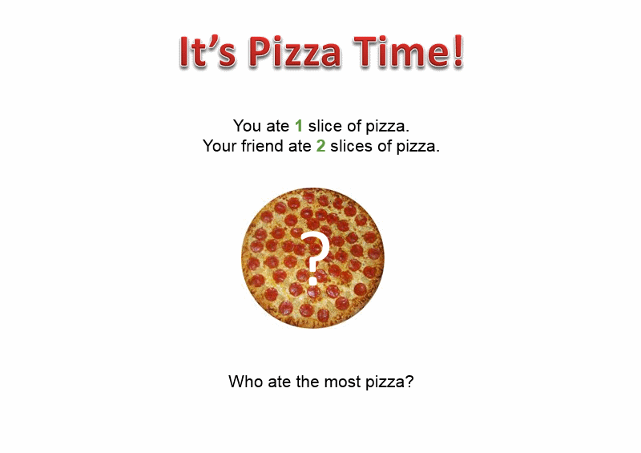
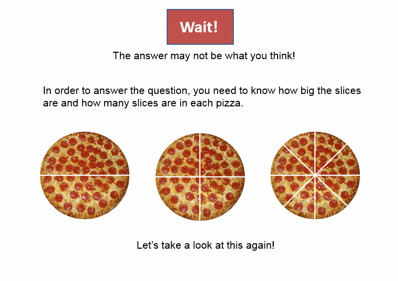
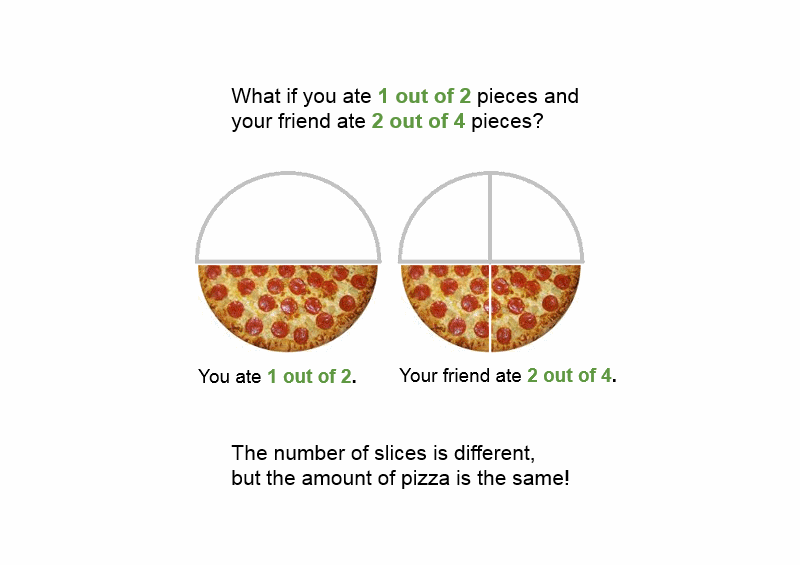
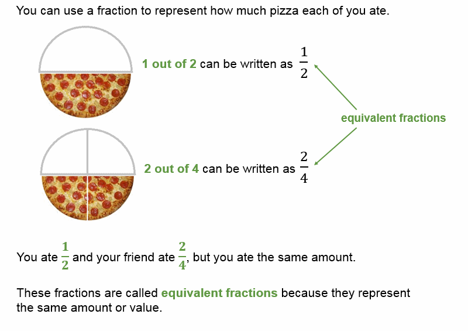
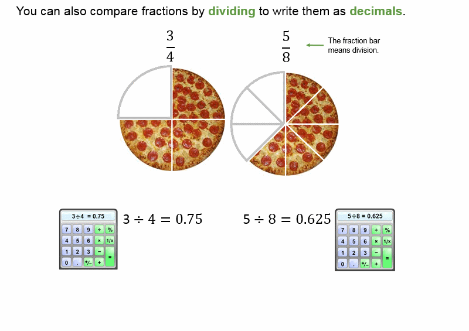
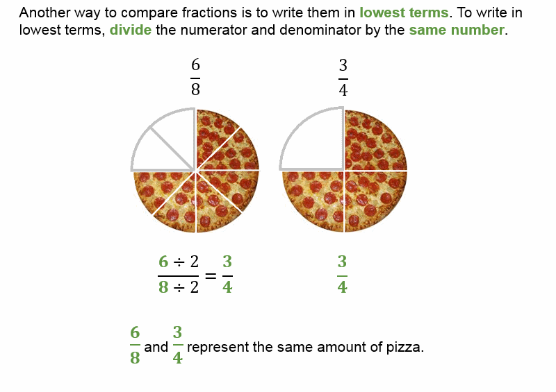

Understanding fractions

1 of 8
Understanding fractions

2 of 8
Understanding fractions

3 of 8
Using fractions to represent values

4 of 8
Writing equivalent fractions
5 of 8
Comparing fractions
6 of 8
Comparing fractions by converting to decimals

7 of 8
Comparing fractions by reducing to lowest terms

8 of 8
![You can write an equivalent fraction by multiplying the top, or numerator, and bottom, or denominator, of the fraction by the same number. An illustration shows two pizzas. The first has 1 out of 2, or one half of its slices missing. The other has 2 out of 4, or two fourths of its slices missing. 1 over 2 times 2 over 2 equals 1 times 2 over 2 times 2, or 2 over 4. The numerator and denominator are multiplied by the same value, 2. One half of one pizza and two fourths of another pizza are the same amount of pizza.](fractions_page5.gif)
![To compare fractions with different denominators, write equivalent fractions with the same denominator. An illustration shows two pizzas with different amounts remaining. The first pizza has three fourths left, and the second pizza has five eighths left. To compare three fourths and five eighths, multiply three-fourths by 2 over 2. three fourths times 2 over 2 equals 3 times 2 over 4 times 2, or 6 over 8 or six eighths. six eighths is more than five eighths, so three fourths must also be more than five eighths.](fractions_page6.gif)